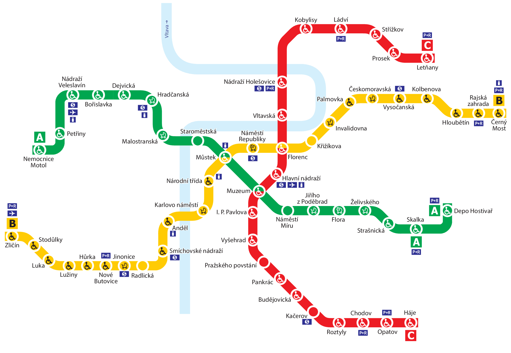

Programming
as architecture, design,
and urban planning
Tomas Petricek, University of Kent
tomas@tomasp.net | @tomaspetricek
Dealing with complexity
We may wish for easier, all-purpose analyses, and for simpler, magical all-purpose cures, but wishing cannot change these problems into simpler matters (…) no matter how much we try to evade the realities and to handle them as something different.
Jane Jacobs (1961)
The Death and Life of
Great American Cities
What kind of a problem city is
Why is urban planning difficult?
-
Problems of simplicity
Admit precise analytical solution -
Problems of disorganized complexity Reducible via statistical analysis
-
Problems of organized complexity Complexity cannot be abstracted away
Jane Jacobs (1961)
The Death and Life of
Great American Cities
What kind of a problem software is
Why anti-ballistic-missile system can’t work?
-
Analog systems
Small in change causes small out change -
Repetitive digital systems
Large, but reducible, number of states -
Problems of organized complexity
Large irreducible number of states
Dave Parnas (1985)
Software Aspects of
Strategic Defence Systems
Beautiful theories
The pseudoscience of city planning and its
companion, the art of city design, have not yet broken with the specious comfort of wishes, familiar superstitions, oversimplifications, and symbols, and have not yet embarked upon the adventure of probing the real world.
Jane Jacobs (1961)
The Death and Life of
Great American Cities
Utopian urban planning ideas

Le Corbusier (1930s)
La Ville Radieuse
Ebenezer Howard (1900s)
Garden Cities
What cities actually work
Greenwich Village and Boston North End
Jane Jacobs (1961)
The Death and Life of
Great American Cities
Utopian programming system ideas
Wishes, superstitions, oversimplifications
-
Fatal abstraction
Puts software at risk of failure -
Information hiding
Hinders long-term maintainability -
Formal models
Often miss crucial aspects
Friedrich Steimann (2018)
Fatal Abstraction
Colin Clark, Antranig Basman (2017)
Tracing a paradigm for externalization: Avatars and the GPII Nexus"
What programming systems actually work
It is curious to observe how the authors in this field, who in the formal aspects of their work require painstaking demonstration and proof, in the informal aspects are satisfied with subjective claims that have not the slightest support.
Peter Naur (1992)
The place of strictly defined
notation in human insight
Understanding complex systems
In the case of understanding cities, I think the most important habits of thought are these: (1) to think about processes; (2) to work inductively; (3) to seek for ‘unaverage’ clues involving very small quantities, which reveal the way larger and more ‘average’ quantities are operating.
Jane Jacobs (1961)
The Death and Life of
Great American Cities
Call to action #1
Study programming systems that work in their full complexity!
Conceptual coherence
Conceptual [coherence] dictates that the design must proceed from one mind, or from a very small number of agreeing resonant minds.
Any product that is sufficiently big (...) must be conceptually coherent to the single mind of the user and at the same time designed by many minds.
Fred Brooks (1975)
The Mythical Man-Month
Two kinds of cities
Conceptual coherence vs.
Evolutionary process
Making sense of a city
The fact that the layout of the city [like Bruges], having developed without any overall design, lacks a consistent geometric logic does not mean that it was at all confusing to its inhabitants.
[T]he relative illegibility of some urban neighbourhoods has provided a vital margin of political safety from control by outside elites
James C. Scott (1998)
Seeing Like a State
The image of a city
How do you find your way around?
Kevin Lynch (1960)
The Image of The City
Call to action #2
Start thinking about understandability, not conceptual coherence!
Adaptable software
Almost no buildings adapt well. They’re designed not to adapt; also budgeted and financed not to, constructed not to, administered not to, maintained not to, regulated and taxed not to, even remodelled not to. But all buildings (...) adapt anyway, however poorly, because the usages in and around them are changing constantly.
Stewart Brand (1994)
How Buildings Learn
Maintenance and materials
How to design maintainable buildings?
-
New buildings teach bad maintenance
Inhabitants stop paying attention -
Maintainability depends on materials
Materials that look bad before they go bad
Vernacular architecture
Design without reinventing the form
-
Un-self-conscious architecture.
Obtains ideal form over generations through small adaptations -
Vernacular software?
Configuration rather than programming, sharing as in Hypercard and 1990s web?
Call to action #3
Invent programming ‘materials’ that age well and allow adaptation!
Conclusions
Software engineering (1970s)
Response to increasing computer availability
Light-weight methodologies (1990s)
Response to internet and faster market
Architecture, design and urban planning
Do we have to wait for another change in
the socio-technological context?